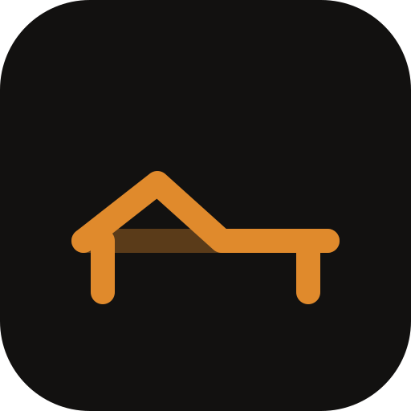

A simple Bluetooth remote for adjustable bed bases with a Keeson KSBT controller, such as the Member's Mark Premier base. No account, no ads, no internet access.
Supported beds · Setup and help · Privacy policy
Bed Remote is an independent app. It is not made by, affiliated with or endorsed by Keeson, Sam's Club or Member's Mark.